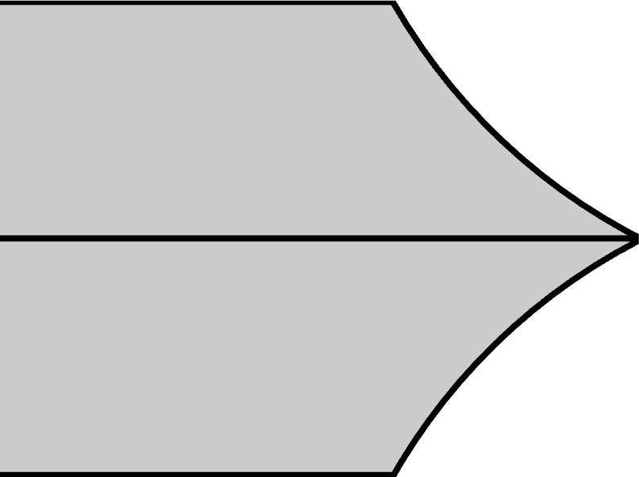
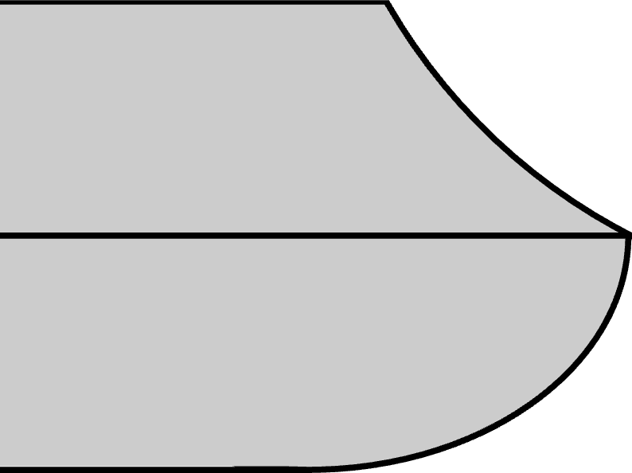

|
|
|
Diamond Parting Tool |

Edge angle

SVS-50 open seat
Guidelines shown below are for use with the Tormek SVS-50 Multi Jig. For the Diamond Parting Tool, the Open Seat is used.
|
Hand-craft signifies cunning, or sleight, or craft of the hand, which cannot be taught by words, but is only gained by practice and exercise. Joseph Moxon |
|
General Guidelines |
||||
|---|---|---|---|---|
| β |
SVS-50 |
Comments |
||
|
JS |
P |
Hole |
||
| 65° | n/a | 60 mm | B |
β can range from 50° - 85°. It is recommended to not move side-to-side with the tool's edge engaged with the grinding surface, especially when using the SVS-50. Instead, move to a position, ensure the SVS-50 is engaged fully with the USB, and then raise the handle to engage the tool with the grinding surface. If you want to move use a different part of the grinding surface, lower the handle first, and then repeat the above-listed instructions. |
Some different edge profiles are discussed below.
|

Diamond style |
|

Convex edge on the bottom |
The diamond style shown to the left is the shape for the tool when shipped by most manufacturers. The edges may be flat instead of slightly concaved (shown exaggerated here).
An alternative has a convex edge on the bottom edge. This is shown in the 2nd picture to the left.
The advantages to this approach are: the added metal below the center line provides better support for the cutting edge, reducing vibration at the tip, this shape does not burnish the wood as quickly as the traditional shape, and the tool is kept sharp longer.
The disadvantages to this approach are: this shape will not be as sharp (as the β will be larger), this tool shape cannot be flipped to allow the turner to use the the other side. This is useful when wood builds up on the edge's surface (as it does with oily woods like padauk), and it also does not allow for usage in as close a quarter (i.e., when using the tool like a bedan to cut at a rotated angle).